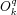
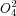
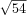

Extended Stevens operators for spins S > 1/2.
Op = stev(S,k,q)
This function computes the
extended Stevens operators
for a spin with spin quantum number S.
The parameters k
and q specify the operator . Allowed
values are 0<=k <= 2S and q = -k,...,k.
The maximum k supported is 12, the most common values are 2, 4 and 6.
For explicit expressions of the operators see the
page on high-order operators.
 for a spin S=2 is
stev(2,4,2)
ans =
0 0 7.3485 0 0
0 0 0 -12.0000 0
7.3485 0 0 0 7.3485
0 -12.0000 0 0 0
0 0 7.3485 0 0
The value 7.3485 corresponds to .
The extended Stevens operators are computed using Racah's commutator rule for the components of spherical tensor operators and Ryabov's general formula for extended Stevens operators (I.D.Ryabov, J.Magn.Reson.140,141-145, 1999).